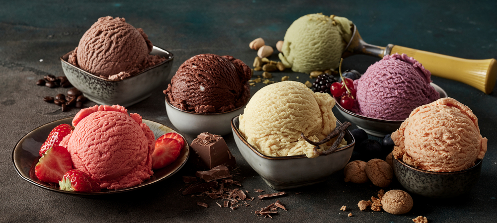

Gelato

Description
Gelato, literally meaning “frozen,” is smooth, round and colorful. Though found around the world, real Italian gelato is created by skilled artisans who take pride in their creations. There are quite a few characteristics that set gelato apart from ice cream. The combination of all natural ingredients, less air, and less butterfat give gelato a more intense and unique flavor. Gelato is also creamier due to the extreme skill and care of its makers. It is mixed by hand or machine until semi-frozen; this prevents the large ice crystals from forming. No artificial colorings or flavorings are used in authentic Italian gelato.
This basic recipe may be used as a base for your favorite flavors. Try adding vanilla, shaved chocolate, or your favorite fruits. Experiment with desired flavors!
Ingredients
- 2 cups of milk
- 1 cup of heavy cream
- 4 egg yolks
- 1/2 cup of sugar
Directions
- Mix milk and cream in a medium saucepan. Warm until foam forms around the edges. Remove from heat.
- Beat egg yolks and sugar until frothy in a large bowl. Gradually pour the warm milk into egg yolks and sugar, whisking constantly. Return mixture to saucepan; cook over medium heat, stirring with a wooden spoon until the mixture gels slightly and coats the back of the spoon. If small egg lumps begin to show, remove from heat immediately.
- Pour the mixture through a sieve or fine strainer into a bowl. Cover, and chill for several hours or overnight.
- Pour the mixture into an ice cream maker, and freeze according to the manufacturer's instructions. Transfer to a sealed container, and freeze until firm. If the gelato is too firm, place it in the refrigerator until it reaches the desired consistency.